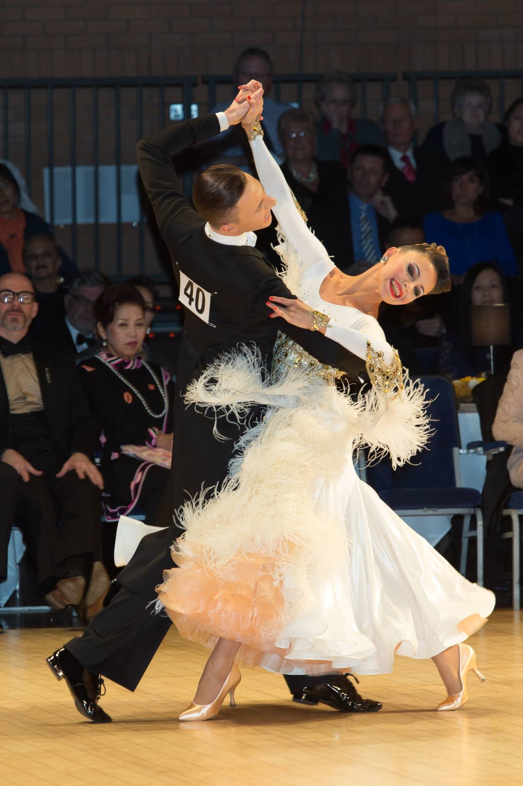
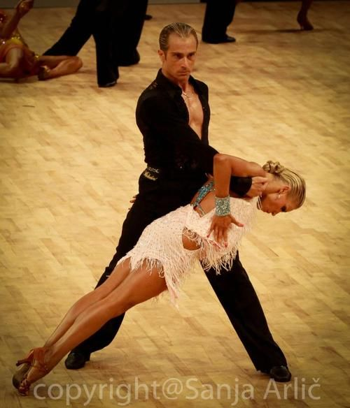

Клуб спортивного бального танца для детей и взрослых.
Европейская программа
Медленный вальс
Танго
Венский вальс
Фокстрот
Квикстеп


Латиноамериканская программа
Ча-Ча-Ча
Самба
Румба
Пасодобль
Джайв
Занятие бальными танцами дают возможность не только научиться красиво,(элегантно) и музыкально двигаться но и иметь прекрасную физическую форму и позитивный настрой в жизни.
студия танца предлагает комплексную подготовку и развитие спортсменов(учеников) для участия в соревнованиях и фестивалях на самом высоком уровне.
европейская и латиноамериканская програма (перечислить танцы с характером каждого)
комфортабельный, оборудованный всем необходимым зал с качественным покрытием пола и зеркалами, удобная транспортная развязка, недалеко от метро
Профессиональные тренера, воспитавшие не одних успешных танцоров, найдут подход именно к вам (и вдохновят на прекрасные результаты)
Учиться Танцевать никогда не поздно.Для людей, которые думают, что учиться танцевать им уже поздно(что свой момент они уже пропустили), существует хобби-группа. Многие известные танцоры начали танцевать в возрасте старше 16ти лет, а некоторые и 20ти.
Техника бальных танцев подразумевает естественные движения, поэтому физическая форма для того, что бы начать танцевать, не так важна, как, например в балете
benefits of dancing for health
если вам нравится движение, качественная музыка, люди с хорошими манерами, взаимодействие с противоположным полом, то вам обязательно стоит познакомиться с исскуством бального танца.